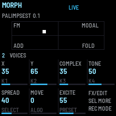
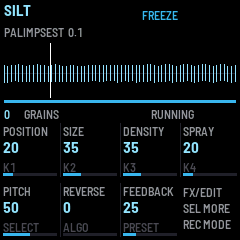

← STRATA / instrumentsPALIMPSEST
Make sound. Capture it. Scatter it. Write over it.
Play the PALIMPSEST emulator · Controls


FX: MORPH. EDIT: SILT. REC: capture mode. PLAY: grains. SEL: more. Start by playing notes and freezing the memory.
Development preview — browser audio uses the same C DSP as the FM-1. Hardware release is built separately.